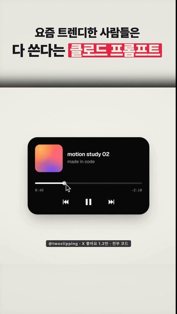
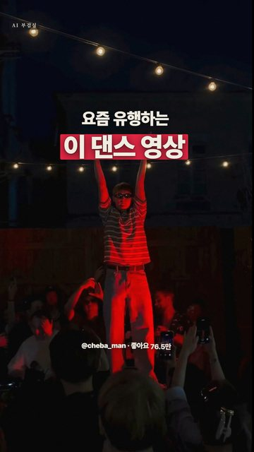
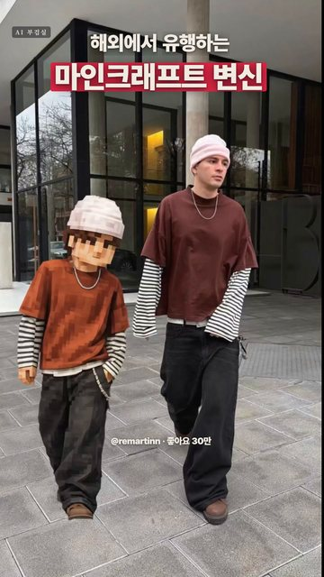
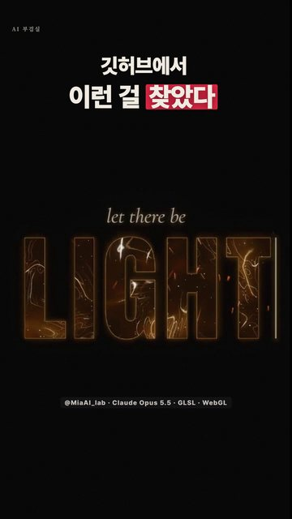
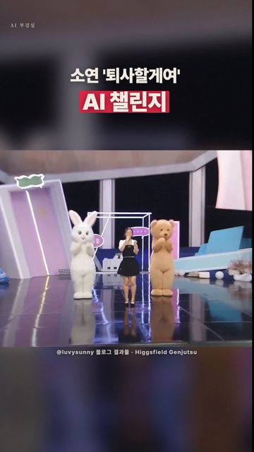
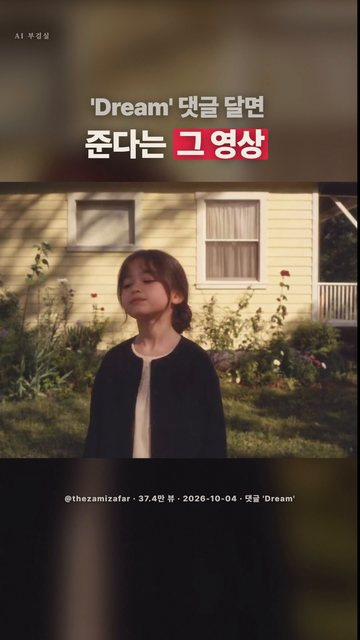

쇼츠에 나온 프롬프트·만드는 법·출처를 그대로 옮겨 둔 곳입니다. 프롬프트는 복사 버튼으로 바로 가져가세요.
유튜브 채널 ›인스타에서 좋아요 30만을 받은 챗GPT 사진 트릭입니다. 원조는 @cindiezhu, 영상 앞부분은 같은 방식으로 만든 @yaudahadudu의 릴스입니다.

좋아요 1.2만을 받은 @twoclipping의 모션 디자인 프롬프트입니다. 그대로 붙여 넣으면 클로드가 재료(UI 상태 8~12개, 색, 120 BPM 무료 음…

인스타에서 좋아요 76.5만을 받은 댄스 영상(@cheba_man)의 주인공을 내 얼굴로 바꾸는 방법입니다. 사진 한 장과 원본 영상 하나면 됩니다.
인스타에서 좋아요 6.8만을 받은 Higgsfield 효과 영상(@thepromptshub)을 가이드대로 만드는 법입니다.

해외 인스타에서 좋아요 30만을 받은 마인크래프트 변신 프롬프트입니다(@remartinn). 프롬프트 원문을 그대로 옮겼습니다.

이미지·영상·음악 파일 없이 전부 코드로 만든 영상입니다. @MiaAI_lab이 Claude Opus 5.5로 만들었고, 아래 다섯 줄이 프롬프트 전부입니다.

소연 '퇴사할게여' 무대 영상 속 인물을 내 모습으로 바꾸는 AI 챌린지입니다. 블로거 러비써니(@luvysunny)가 블로그에 공개한 방법을 정리했습니다.

내 사진으로 '어린 시절의 나' 캐릭터를 만들고, 원본 영상의 립싱크·표정·몸짓을 그대로 따라 하게 만드는 AI 영상입니다. 원작은 @thezamizafar의 릴…